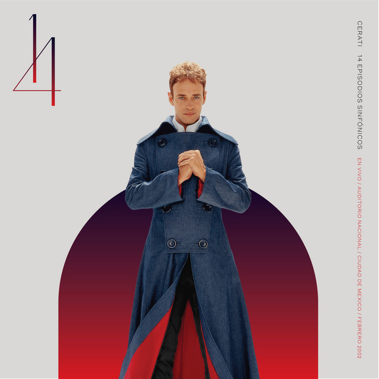
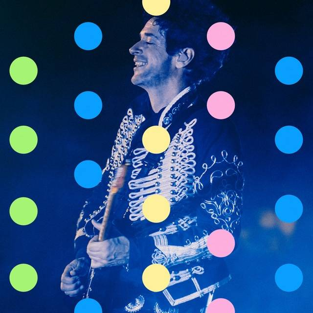
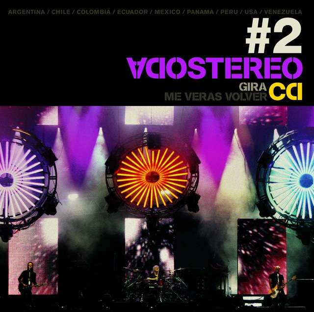
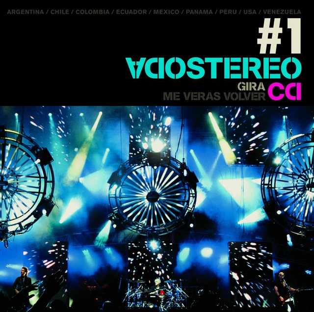
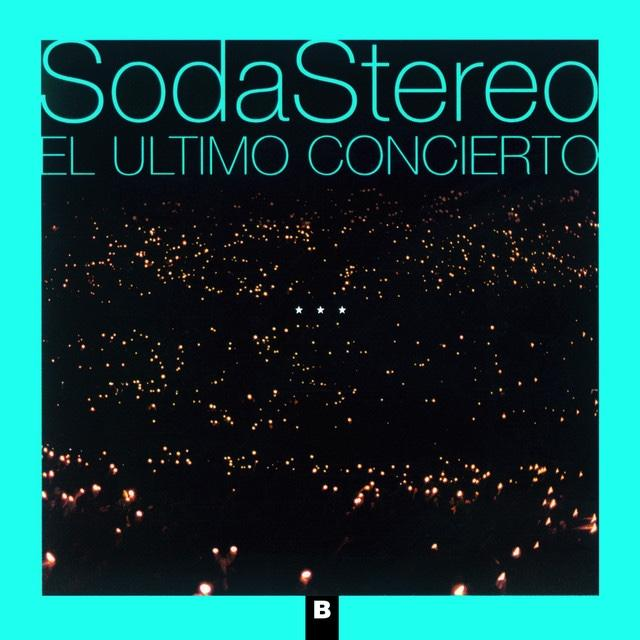
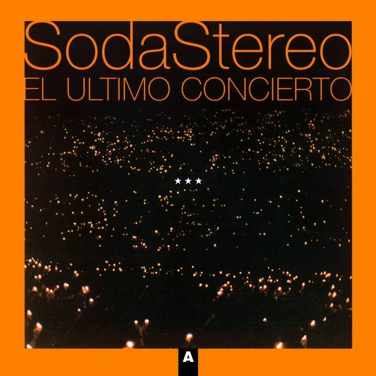
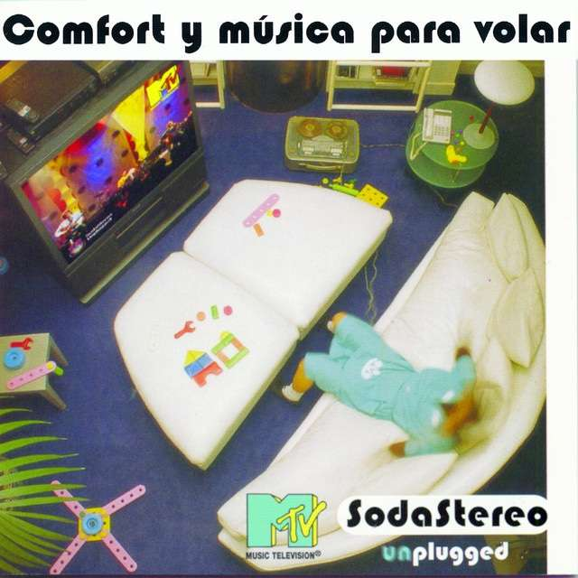
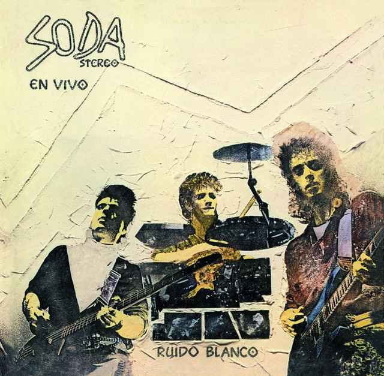

14 Episodios Sinfónicos / En Vivo / Febrero 2002
Gustavo Cerati
13 de agosto de 2022

13 de agosto de 2022

20 de noviembre de 2019

18 de julio de 2008

18 de julio de 2008

16 de diciembre de 1997

16 de diciembre de 1997

25 de septiembre de 1996

1 de noviembre de 1987